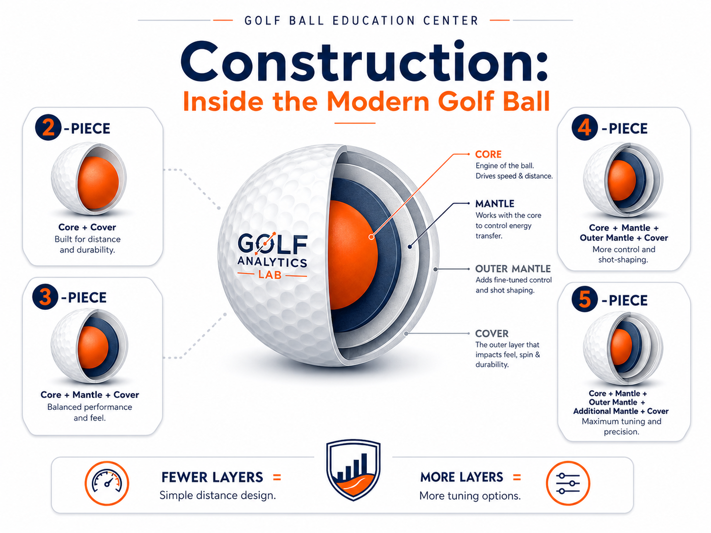

How Engineering, Not Marketing, Determines Performance
Part Two of Golf Analytics Lab's Four C's Series By Golf Analytics Lab
Introduction
“It's a five-piece Tour golf ball.” Walk into any golf shop and you'll hear statements like that. The implication is that more layers must mean better performance. But that isn't necessarily true. Modern golf balls are among the most sophisticated pieces of sports equipment ever manufactured. Hidden beneath the cover are carefully engineered materials designed to control energy transfer, launch angle, spin rate, feel, durability, and even sound. Construction isn't just about how many layers a golf ball has—it's about what each layer is designed to do.

A Brief History of Golf Ball Construction
Golf ball construction has evolved from feather-filled leather balls to gutta-percha, the revolutionary Haskell wound ball, the balata era, and today's solid-core multilayer designs. Each innovation improved consistency, durability, distance, and control.
Inside a Modern Golf Ball
A modern golf ball is built in layers, each with a specific purpose: • Core – The engine of the golf ball that stores and releases energy. • Mantle – One or more intermediate layers that manage speed, spin, and energy transfer. • Cover – The outer layer that controls feel, durability, and short-game performance.
The relationship between those layers becomes easier to understand when you watch energy move through the ball from the inside out.
How Core Energy Transfer Works
This animation shows how the core stores and releases energy, how mantle layers help manage that transfer, and why construction changes launch, speed, and spin.
Two-Piece Construction
Consists of a large solid core and a durable cover. Advantages include maximum durability, excellent distance, and lower cost. Ideal for beginners and recreational golfers.
Three-Piece Construction
Adds a mantle layer between the core and cover. This improves feel, spin separation, and overall versatility while maintaining excellent distance.
Four- and Five-Piece Construction
Premium tour balls often include multiple mantle layers, allowing engineers to optimize performance for different clubs. Additional layers help fine-tune launch, spin, and feel, but more layers do not automatically make a golf ball better.
Construction Is a System
Every layer influences the others. A well-designed three-piece golf ball can outperform a poorly designed five-piece ball because materials, chemistry, and engineering matter more than simply counting layers.
Construction and the Four C's
Construction works together with Compression, Cover, and Cost. Evaluating all four characteristics gives golfers a much more complete understanding of performance than relying on a single specification.
Final Thoughts
From featheries to modern multilayer designs, golf ball construction has continuously evolved through engineering innovation. Understanding how each layer contributes to performance helps golfers make smarter buying decisions and appreciate that construction is about design—not marketing.